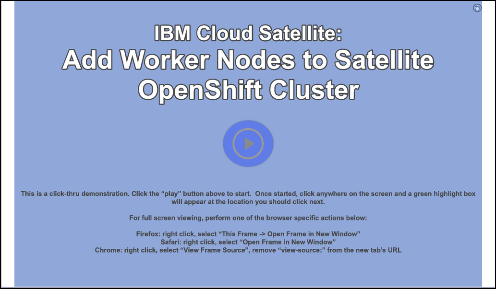

Home
Welcome to the IBM Cloud Satellite Technology Sales Enablement Level 3 demonstration guide. The goal of this demonstration guide is to provide IBM and Business Partner Sales and Technical Sales the knowledge and tools to perform introductory demonstrations of IBM Cloud Satellite.
There are 3 parts to this demonstration guide as seen in the left hand navigation:
- Part 1 - IBM Cloud Satellite overview and provisioning
- Part 2 - Deploy an IBM Cloud Satellite enabled service
- Part 3 - Deploy an OpenShift application
To complete the IBM Cloud Satellite Level 3 badge requirements, IBM and Business Partners sellers must complete Parts 1 and 2 of this demonstration guide. However, we strongly encourage sellers to complete all three sections. The technical sales community must complete all three sections. The associated Learning Plan Stand and Deliver rubrics (IBMers) and quizzes (Business Partners) are based upon the sections required for the respective roles.
Each of these sections has detailed steps for demonstrating IBM Cloud Satellite. Click on each section name in the left hand navigation bar to expand the section.
In Part 1 and Part 2, you will see how the demonstration environment was built and how you can perform a "baking show" type of demonstration using the IBM Cloud Portal, click-thru demos, or videos made available in this demonstration script. Note that you will not be deploying a new Satellite Location or Red Hat OpenShift on IBM Cloud cluster, as these activities take a significant amount of time and resources (money).
In Part 3, you will use the IBM Cloud Portal to complete the deployment of a cloud native application. This section provides a compelling demonstration to potential clients.
Tip
You can also leverage the IBM Cloud Satellite collection here for longer client demonstrations or proof-of-concepts. Be aware, additional provisioning time and manual configurations are required. Refer to the documentation in the collection.
Helpful tips for using this demonstration environment
This demonstration script is organized in parts and chapters. Most chapters contain numbered steps, which are actions that you will perform.
Throughout the lab, you will see images that are examples of what you should be seeing in the IBM Cloud Portal, IBM Cloud Shell, and Red Hat OpenShift web console. In some instances, you will see the following styles of highlighting in those images:
- Action highlight box: Illustrates where you should click, enter, or select an item:

-
Path/explore highlight box: Illustrates one of two things:
- the path to follow to get to a specific location in the user interface
- areas to explore on your own

- Copy to clipboard box: Text that is copied to your clipboard. Click the copy icon (highlighted below) and then paste using your operating systems paste function, for example, entering Ctrl+v, Cmd+v, or right click and select paste.

Additionally, there are several "click-thru" demonstrations. Links to click-thru demonstrations will open in a new browser window or tab with a screen similar to the image below.

Click the play button  in the middle of the screen to start the demo. Then, simply follow the steps in the demonstration guide. If at any point you are unsure where to click, click anywhere on the screen and a highlight box will appear showing where to click next.
in the middle of the screen to start the demo. Then, simply follow the steps in the demonstration guide. If at any point you are unsure where to click, click anywhere on the screen and a highlight box will appear showing where to click next.
Acronyms
The following acronyms are used throughout this demonstration guide:
- YAML - Yet Another Markup Language
- AWS - Amazon Web Services
- ctrl - The control key on your keyboard
- cmd - The command key on your keyboard